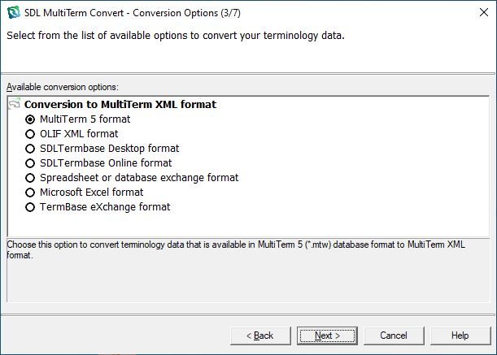

Introduction
What is MultiTerm Convert?
MultiTerm Convert is a standalone wizard application that was designed to convert legacy data such as Excel spreadsheets, semi-colon delimited files, etc. into MultiTerm XML format (MTF). At the time of writing MultiTerm Convert was delivered with three conversion options:
- Conversion of the old MultiTerm 5 format (*.mtw files) into MTF
- Conversion of spreadsheet/database exchange formats (.e.g *.csv) into MTF
- Conversion of Microsoft Excel spreadsheets into MTF
- Conversion of SDL Termbase and SDL Termbase Online into MTF
- Conversion of OLIF lexicons into MTF
- Conversion of TBX files into MTF

All conversion options are implemented as plug-ins, which are located in the *Plugins **sub-folder of the MultiTerm Convert installation directory, usually *C:\Program Files\SDL\SDL MultiTerm\MultiTerm8\Convert\Plugins. Upon startup of MultiTerm Convert the application scans the **Plugins **sub-folder for any *.dll libraries that implement a particular set of interfaces. If a *.dll is found to implement the required interfaces, it is recognized as a MultiTerm Convert plug-in, and will consequently be listed on the "Available conversion options" screen.
Setting-up a New Project
First create a new Class Library project in MS Visual Studio. The sample plug-in will be implemented in C#. You need to add the following references to your project:
- Trados.MultiTerm.Builders.dll
- Trados.MultiTerm.Conversion.Api.dll
- Trados.MultiTerm.Plugins.dll
- Trados.MultiTerm.Utility.dll
- Trados.MultiTerm.Wizard.dll
You can find these libraries in the MultiTerm Convert installation path, usually C:\Programme\TRADOS\MultiTerm\MultiTermConvert.